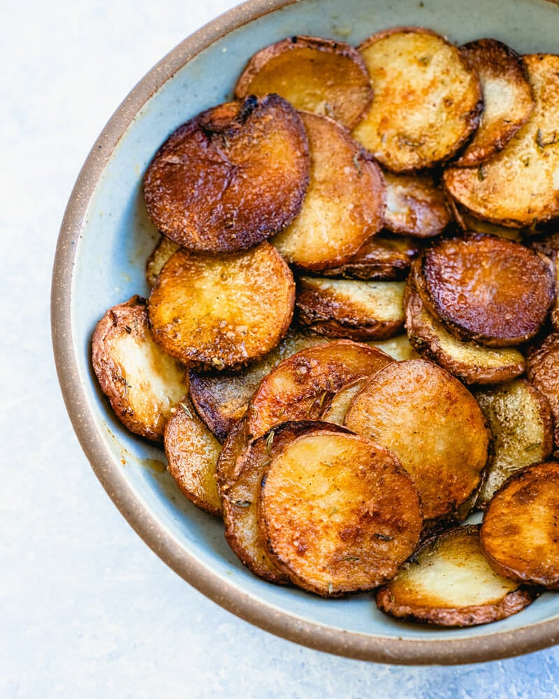

Fried potatoes

ingredients
- potatoes
- butter
- oil
- smoked paprika, garlic powder, thyme
steps
- Slice potatoes into thin, even slices
- preheat and oil pan
- season potatoes
- add potatoes to pan, fry for a few minutes with high heat
- remove lid, lower heat
- add more seasoning if necessary
- fry until no longer raw and desired crispiness is reached